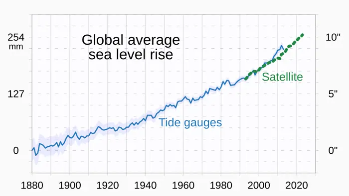

October 23, 2026
10 stories from today’s news cycle, aggregated and linked to original reporting.

Satellites show Earth lost more than 12 trillion tons of ice from Greenland, Antarctica in 47 years
In the last two decades, satellite sensors have turned the Earth into a precise scale, weighing the loss of th

Lawsuit says Anthropic, OpenAI, SpaceXAI and Google made illegal agreement on AI slowdown
<article> <h1>Antitrust Law and the AI Boom: Separating Fact from Rumor</h1> <p>A recent rumor alleges that An

More than 400 schools in France to be closed on Monday as more protests
<article> <p><strong>Monday’s school closures in France: a flashpoint in the pension‑reform debate</strong></p
Man who sprayed Minnesota Rep. Omar with vinegar sentenced to 14 months in prison
Man who sprayed Minnesota Rep. Omar with vinegar s: r/news
Is Zelensky right to say data centre strikes have taken down Russian bots?
<h2>Is Zelensky right to say data‑centre strikes have taken down Russian bots?</h2> <p>On 15 April 2024, Presi
EXCLUSIVE: Order to limit Starshield for Ukraine came from inside White House, sources say
EXCLUSIVE: Order to limit Starshield for Ukraine c: Reuters

Ukraine deploys FP-7 tactical ballistic missile in combat for first time, Zelenskiy says
<p><strong>On 14 April 2024, Ukrainian forces reportedly fired a missile recovered from a Russian logistics ba
Stocks advance after Bessent says talks with China were successful before Trump
<h1>Stocks Rise on Speculation of U.S.-China Trade Talks Ahead of Trump‑Xi Summit</h1> <p>U.S. equity markets
SpaceX’s supersized Starship launches into orbit for the first time but flight ends early
<article> <h2>SpaceX’s Starship Test Flight Ends Early, Highlights Development Challenges</h2> On 22 December
Private spacecraft falls back to Earth after failing to rescue aging NASA telescope
Private spacecraft falls back to Earth after faili: AP News